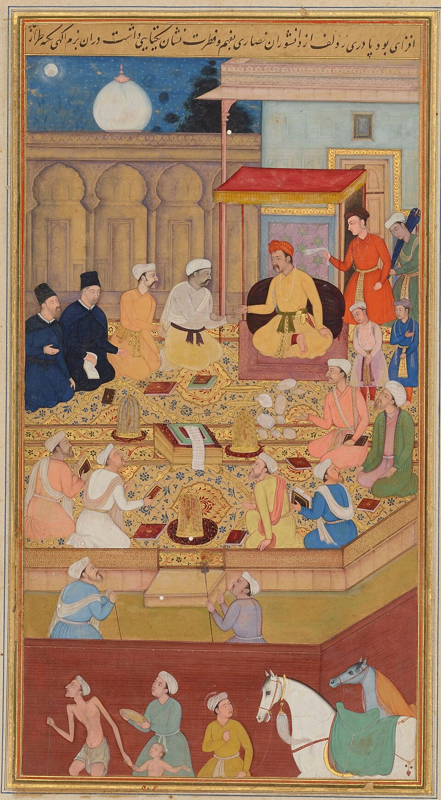
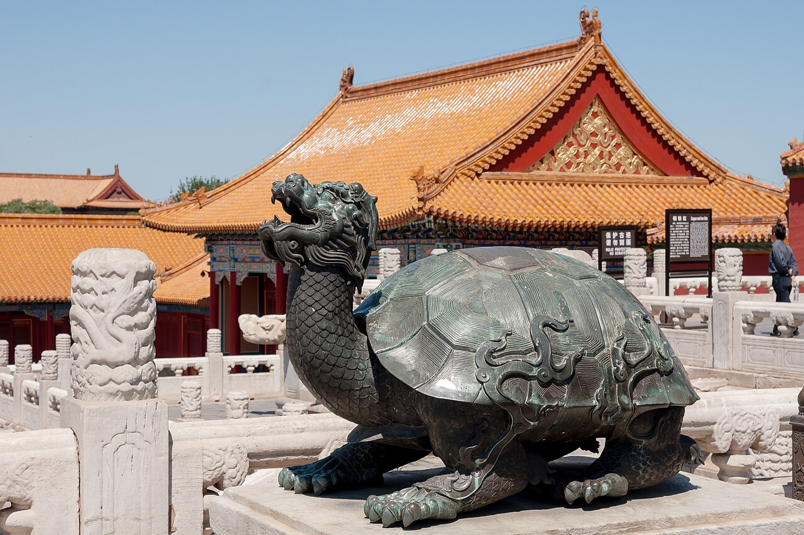

1. Η Ινδία των Μουγκάλ: Ο Μέγας Ακμπάρ και η Καθολική Ειρήνη
Στο δέκατο τέταρτο μάθημα της σειράς, η Μαρία Ευθυμίου εξετάζει δύο από τα πιο εκθαμβωτικά πολιτισμικά και δημογραφικά μεγαθήρια της ανθρωπότητας: την Αυτοκρατορία των Μουγκάλ στην Ινδία και την Αυτοκρατορική Κίνα των δυναστειών Μινγκ και Τσινγκ.
Ενώ η Ευρώπη του 16ου αιώνα σπαρασσόταν από τους θρησκευτικούς πολέμους και τις πυρές της Ιεράς Εξέτασης, στην Ινδία ο Μέγας Ακμπάρ (Akbar the Great, βασ. 1556–1605) οικοδομούσε ένα πρωτοφανές καθεστώς διαθρησκειακής αρμονίας:
- Το Παράδοξο του Αναλφάβητου Σοφού: Παρότι ο Ακμπάρ κυβέρνησε μια αχανή αυτοκρατορία και υπήρξε ένας από τους πιο πολυμαθείς μονάρχες της ιστορίας, ήταν εντελώς αναλφάβητος και δυσλεκτικός! Δεν έμαθε ποτέ να διαβάζει ή να γράφει. Κι όμως, δημιούργησε μια κολοσσιαία αυτοκρατορική βιβλιοθήκη με πάνω από 24.000 σπάνια χειρόγραφα. Κάθε απόγευμα, λόγιοι, ποιητές, φιλόσοφοι και επιστήμονες του διάβαζαν φωναχτά κείμενα επί ώρες. Διαθέτοντας μια ασύλληπτη φωτογραφική μνήμη, ο Ακμπάρ συγκρατούσε τα πάντα και συζητούσε με κοφτερή οξύνοια περί θεολογίας, μαθηματικών και φιλοσοφίας!
- Κατάργηση των Διακρίσεων: Κατήργησε τον κεφαλικό φόρο των μη μουσουλμάνων (Jizya) και τον φόρο των ινδουιστικών προσκυνημάτων, παντρεύτηκε Ινδουίστριες πριγκίπισσες των Ρατζπούτ (όπως την Τζόντα Μπάι) επιτρέποντάς τους να διατηρήσουν τη λατρεία τους, και διόρισε Ινδουιστές στα ανώτατα αξιώματα (όπως τον υπουργό Οικονομικών Ράτζα Τόνταρ Μαλ).
- Το Ibadat Khana (Οίκος Λατρείας): Στην πρωτεύουσά του, το Φατεχπούρ Σικρί, οργάνωσε μια αίθουσα όπου συγκέντρωνε λογίους από όλες τις παραδόσεις: Σουνίτες, Σιίτες, Ινδουιστές βραχμάνους, Ζωροάστρες, Τζαϊνιστές και Ιησουίτες μοναχούς από τη Γκόα, συζητώντας ισότιμα περί θείας αλήθειας.
- Sulh-i-kul (Καθολική Ειρήνη): Διακήρυξε την αρχή της συμφιλίωσης όλων των δογμάτων και δημιούργησε τη συγκρητιστική πνευματική τάση Din-i-Ilahi («Θεία Πίστη»).

2. Το Ταζ Μαχάλ και η Παρακμή: Σαχ Τζαχάν & Αουρανγκζέμπ
Το αρχιτεκτονικό απόγειο των Μουγκάλ έφτασε υπό τον εγγονό του Ακμπάρ, τον Σαχ Τζαχάν (Shah Jahan, 1628–1658), ο οποίος ανήγειρε στην Άγκρα το αξεπέραστο Ταζ Μαχάλ (1632–1653) ως μαυσωλείο για την πολυαγαπημένη του σύζυγο Μουμτάζ Μαχάλ.

Η δυναστεία οδηγήθηκε σε παρακμή υπό τον γιο του, τον Αουρανγκζέμπ (Aurangzeb, 1658–1707). Φανατικός σουνίτης, φυλάκισε τον ηλικιωμένο πατέρα του στο Κόκκινο Φρούριο της Άγκρα και δολοφόνησε τον φωτισμένο αδελφό του Ντάρα Σικόχ (που είχε μεταφράσει τις Ουπανισάδες στα περσικά). Ο Σαχ Τζαχάν έζησε τα τελευταία οκτώ χρόνια της ζωής του φυλακισμένος, αγναντεύοντας από το μικρό παράθυρο του κελιού του το ολόλευκο Ταζ Μαχάλ απέναντι από τον ποταμό Γιαμούνα.
Ο Αουρανγκζέμπ επανέφερε τον φόρο Jizya, κατέστρεψε ινδουιστικούς ναούς και κατασπατάλησε τα ταμεία της αυτοκρατορίας σε 25ετείς πολέμους στο Ντεκάν. Μετά τον θάνατό του, η κατακερματισμένη Ινδία έγινε εύκολη λεία για τη βρετανική Εταιρεία Ανατολικών Ινδιών.
Η Μεγάλη Πληγή της Διχοτόμησης (1947) & η Ειρωνεία του Ινδού Ποταμού: Όπως αναλύει η Μαρία Ευθυμίου, οι θρησκευτικές εντάσεις που όξυνε ο Αουρανγκζέμπ άφησαν προαιώνιο τραύμα που οδήγησε το 1947 στη βίαιη Διχοτόμηση της Ινδίας (Partition). Η απόσπαση του Πακιστάν σε δύο τμήματα (Δυτικό και Ανατολικό / Μπανγκλαντές) χωρισμένα από 2.000 χιλιόμετρα ήταν μια σχιζοφρενική λύση που κατέληξε στον πόλεμο του 1971. Παράλληλα, πυροδότησε τη δεύτερη επίσημη ανταλλαγή πληθυσμών στην ιστορία μετά το 1923, αλλά σε γιγαντιαία κλίμακα 15 εκατομμυρίων προσφύγων με πάνω από ένα εκατομμύριο σφαγιασθέντες (μεταξύ των οποίων και ο Μαχάτμα Γκάντι). Και η απόλυτη ιστορική ειρωνεία: ο ποταμός Ινδός, η κοιτίδα των αρχαίων πολιτισμών απ' όπου πήρε το όνομά της η Ινδία, ανήκει σήμερα εξ ολοκλήρου στο αντίπαλο Πακιστάν!
3. Η Κολομβιανή Ανταλλαγή: Πώς η Αμερική Άλλαξε την Κουζίνα & τη Δημογραφία της Ασίας
Σήμερα θεωρούμε την ινδική κουζίνα, την ταϊλανδέζικη και την κινεζική κουζίνα του Σετσουάν συνώνυμες με τις καυτερές κόκκινες πιπεριές (τσίλι) και τις πλούσιες σάλτσες ντομάτας. Κι όμως, πριν από το 1492, δεν υπήρχε ούτε μία πιπεριά τσίλι, ούτε μία ντομάτα, ούτε μία πατάτα σε ολόκληρο τον Παλαιό Κόσμο (Ασία, Ευρώπη, Αφρική)!
Το παραδοσιακό ινδικό κάρι καρυκευόταν αποκλειστικά με μαύρο πιπέρι, τζίντζερ, κάρδαμο και σπόρους μουστάρδας. Στο Σετσουάν της Κίνας δεν γνώριζαν το κόκκινο τσίλι, στην Ιταλία δεν υπήρχε σάλτσα ντομάτας στα μακαρόνια, και στη Ρωσία δεν υπήρχαν πατάτες! Ήταν οι Πορτογάλοι και Ισπανοί έμποροι που έφεραν τα φυτά της Αμερικής στην Ασία, αλλάζοντας για πάντα τη γεύση της ανθρωπότητας.
Η Δημογραφική Έκρηξη της Κίνας: Πέρα από τη γεύση, τα αμερικανικά φυτά έσωσαν εκατομμύρια ζωές. Η γλυκοπατάτα, το καλαμπόκι και τα φιστίκια μπορούσαν να καλλιεργηθούν σε άγονα, ορεινά εδάφη όπου το ρύζι και το σιτάρι δεν ευδοκιμούσαν. Χάρη στις νέες αυτές καλλιέργειες, η Κίνα υπό τη δυναστεία των Τσινγκ ξεπέρασε τους καταστροφικούς λιμούς και ο πληθυσμός της εκτοξεύτηκε θεαματικά από τα 140 εκατομμύρια στα 300 και πλέον εκατομμύρια μέσα στον 18ο αιώνα!
4. Η Κίνα των Μινγκ: Η Απαγορευμένη Πόλη & οι Στόλοι του Τσενγκ Χι
Το 1368, η εθνική δυναστεία των Μινγκ (Ming, 1368–1644) έδιωξε τους Μογγόλους και αποκατέστησε την κυριαρχία των Χαν. Η διοικητική σταθερότητα της Κίνας στηριζόταν σε έναν θεσμό μοναδικό στην παγκόσμια ιστορία, τον οποίο η Μαρία Ευθυμίου παρομοιάζει με ένα «αρχαίο ΑΣΕΠ του 200 π.Χ.»: Ήδη από την εποχή των Χαν, η πρόσληψη των κρατικών λειτουργών γινόταν με αδιάβλητες γραπτές εξετάσεις στα κομφουκιανά κείμενα, ανοιχτές σε κάθε πολίτη ανεξαρτήτως κοινωνικής τάξης (το 1042 μ.Χ. σχεδόν το 40% των ανώτερων αξιωματούχων προερχόταν από άσημες οικογένειες). Κάθε χρόνο οι υπάλληλοι περνούσαν από εξονυχιστική αξιολόγηση: αν κάποιος κρινόταν ανεπαρκής, απολυόταν άμεσα και υποχρεωνόταν να επιστρέψει στο δημόσιο ταμείο όλους τους μισθούς που είχε εισπράξει!
Αυτό το σύστημα πλαισιωνόταν από έναν αξεπέραστο τεχνολογικό πολιτισμό: η πυρίτιδα, το χαρτί, η ξυλογραφική τυπογραφία (το πρώτο τυπωμένο βιβλίο στην ιστορία τυπώθηκε στην Κίνα το 843 μ.Χ.), τα μηχανικά ρολόγια, οι σεισμογράφοι, η μαγνητική πυξίδα, το χαρτί υγείας, ακόμη και βαθιά γεωτρύπανα βάθους 1.500 μέτρων για την εξόρυξη φυσικού αερίου και άλμης.
Ο αυτοκράτορας Γιονγκλέ (Yongle) μετέφερε την πρωτεύουσα στο Πεκίνο και έχτισε την Απαγορευμένη Πόλη (Zijincheng), το μεγαλύτερο παλατιακό σύμπλεγμα του κόσμου με 980 κτίρια και 9.999,5 δωμάτια.

Την ίδια περίοδο (1405–1433), ο μουσουλμάνος ευνούχος ναύαρχος Τσενγκ Χι (Zheng He) οδήγησε επτά κολοσσιαίες ναυτικές εκστρατείες στον Ινδικό Ωκεανό, με «θησαυροφόρα πλοία» (Baochuan) μήκους άνω των 120 μέτρων (τετραπλάσια από τα πλοία του Κολόμβου!), φτάνοντας μέχρι την Αραβία και τις ακτές της Κένυας στην Αφρική.
Το Θαύμα του «Τσιλίν» (1414): Το 1414, ο στόλος του Τσενγκ Χι επέστρεψε φέρνοντας από το Μαλίντι της Αφρικής μια ζωντανή καμηλοπάρδαλη! Ο αυτοκράτορας Γιονγκλέ και η αυλή έμειναν έκθαμβοι: θεώρησαν ότι το παράξενο ζώο με τον μακρύ λαιμό ήταν το μυθικό, ιερό Τσιλίν (Qilin), το ουράνιο πλάσμα που εμφανίζεται στη γη μόνο υπό τη βασιλεία ενός απόλυτα ενάρετου και θεοπρόβλητου μονάρχη! Ζωγράφοι της αυλής φιλοτέχνησαν μεταξωτούς πίνακες της καμηλοπάρδαλης και ποιητές συνέθεσαν θριαμβευτικούς ύμνους για το θεϊκό σημάδι.
Ωστόσο, μετά τον θάνατο του Γιονγκλέ, η Κίνα έκλεισε εθελούσια τα σύνορά της: οι συντηρητικοί μανδαρίνοι θεώρησαν τα ταξίδια αυτά περιττή σπατάλη, διέλυσαν τους στόλους και απαγόρευσαν τη ναυσιπλοΐα με ποινή θανάτου, παραχωρώντας τους παγκόσμιους ωκεανούς στους Ευρωπαίους εξερευνητές!
5. Η Δυναστεία των Τσινγκ: Ο Αυτοκράτορας Τσιανλόνγκ & η Ψευδαίσθηση της Αυτάρκειας
Το 1644, οι Μαντσού εισέβαλαν από τον βορρά και ίδρυσαν τη δυναστεία των Τσινγκ (Qing, 1644–1912). Επί του αυτοκράτορα Τσιανλόνγκ (Qianlong, 1735–1796), η Κίνα διπλασίασε την επικράτειά της, αριθμώντας πάνω από 300 εκατομμύρια υπηκόους και παράγοντας πάνω από το ένα τρίτο του παγκόσμιου πλούτου.

Η Πρεσβεία Μακάρτνεϊ (1793): «Ο Φόρος Υποτελείας των Κοκκινομάλληδων Βαρβάρων»: Το 1793, η Μεγάλη Βρετανία απέστειλε στο Πεκίνο τον Λόρδο Τζορτζ Μακάρτνεϊ με 600 κιβώτια γεμάτα από τα πιο εξελιγμένα θαύματα της βρετανικής βιομηχανίας (τηλεσκόπια, χρονόμετρα, αστρονομικά πλανητάρια, ατμομηχανές), ζητώντας το άνοιγμα του ελεύθερου εμπορίου. Οι Κινέζοι αξιωματούχοι, με αδιαπέραστη υπεροψία, κρέμασαν κίτρινα λάβαρα πάνω στα πλοιάρια των Βρετανών που έγραφαν: «Ο φόρος υποτελείας από τους κοκκινομάλληδες βαρβάρους της Αγγλίας»!
Όταν ο Μακάρτνεϊ αρνήθηκε να γονατίσει και να χτυπήσει εννέα φορές το μέτωπο στο πάτωμα (kowtow), ο Τσιανλόνγκ απάντησε με το περίφημο διάταγμα προς τον βασιλιά Γεώργιο Γ΄: «Η Ουράνια Αυτοκρατορία μας διαθέτει τα πάντα σε υπεραφθονία και δεν στερείται κανενός αγαθού εντός των συνόρων της. Δεν έχουμε καμία ανάγκη να εισάγουμε τα κατασκευάσματα των ξένων βαρβάρων...». Αυτή η υπεροπτική αυτάρκεια και τεχνολογική στασιμότητα άνοιξε τον δρόμο για τη συντριβή της Κίνας στους Πολέμους του Οπίου.
6. Ετυμολογικό Εργαστήρι
- Μουγκάλ (Mughal): Περσική παραλλαγή της λέξης Μογγόλος.
- Ταζ Μαχάλ (Taj Mahal): «Το Στέμμα του Παλατιού» (από το Taj = στέμμα και το όνομα της συζύγου Mumtaz Mahal = το εκλεκτό κόσμημα του ανακτόρου).
- Απαγορευμένη Πόλη (Zijincheng): Κυριολεκτικά «Πορφυρή Απαγορευμένη Πόλη», εμπνευσμένη από το πορφυρό χρώμα του Πολικού Αστέρα, γύρω από τον οποίο περιστρέφεται το σύμπαν.
- Μανδαρίνος (Mandarin): Από το πορτογαλικό mandarim, που ριζώνει στο σανσκριτικό mantri (σύμβουλος / υπουργός).
- Kowtow (Κοου-τόου): Από το κινεζικό kòutóu (χτυπώ το μέτωπο στο πάτωμα), η παραδοσιακή πράξη υπέρτατης υποταγής στον αυτοκράτορα.